산업위생관리기사 (2016-03-06 기출문제)
1과목: 산업위생학개론
1. 전산피로 정도를 평가하기 위한 측정 수치가 아닌 것은? (단, 측정 수치는 작업을 마친 직후 회복기의 심박수이다.)
- 작업 종료 후 30 ~ 60초 사이의 평균 맥박수
- 작업 종료 후 60 ~ 90초 사이의 평균 맥박수
- 작업 종료 후 120 ~ 150초 사이의 평균 맥박수
- 작업 종료 후 150 ~ 180초 사이의 평균 맥박수
(정답률: 70%)

2. 사망에 대한 근로손실을 7,500일로 산출한 근거는 다음과 같다. ( )에 알맞은 내용으로만 나열한 것은?
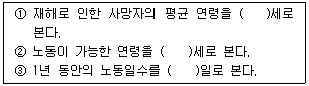
- 30, 55, 300
- 30, 60, 310
- 35, 55, 300
- 35, 60, 310
(정답률: 72%)
3. 미국산업안전보건연구원(NIOSH)에서 제시한 중량물의 들기작업에 관한 감시기준(Action Limit)과 최대 허용기준 ( Maximum Permissible Limit)의 관계를 바르게 나타낸 것은?
- MPL = 3AL
- MPL = 5AL
- MPL = 10AL
- MPL =
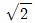
AL
(정답률: 78%)
4. 심리학적 적성검사 중 직무에 관한 기본지식과 숙련도, 사고력 등 직무평가에 관련된 항목을 가지고 추리검사의 형식으로 실시하는 것은?
- 지능검사
- 기능검사
- 인성검사
- 직무능검사
(정답률: 57%)
5. 산업재해를 대비하여 작업근로자가 취해야 할 내용과 거리가 먼 것은?
- 보호구 착용
- 작업방법의 숙지
- 사업장 내부의 정리정돈
- 공정과 설비에 대한 검토
(정답률: 84%)
6. 영국에서 최초로 보고된 직업성 암의 종류는?
- 폐암
- 골수암
- 음낭암
- 기관지암
(정답률: 88%)
7. 영상표시단말기(VDT)의 작업자세로 틀린 것은?
- 발의 위치는 앞꿈치만 닿을 수 있도록 한다.
- 눈과 화면의 중심 사이의 거리는 40cm 이상이 되도록 한다.
- 윗 팔과 아랫 팔이 이루는 각도는 90도 이상이 되도록 한다.
- 아래팔은 손등과 일직선을 유지하여 손목이 꺽이지 않도록 한다.
(정답률: 82%)
8. 분진의 종류 중 산업안전보건법상 작업환경측정 대상이 아닌 것은?
- 목분진(Wood dust)
- 지분진(Paper dust)
- 면분진(Cotton dust)
- 곡물분진(Grain dust)
(정답률: 70%)
9. 실내공기오염물질 중 석면에 대한 일반적인 설명으로 거리가 먼 것은?
- 석면의 발암성 정보물질의 표기는 1A에 해당한다.
- 과거 내열성, 단열성, 절연성 및 견인력 등 뛰어난 특성 때문에 여러분야에서 사용되었다.
- 석면의 여러 종류 중 건강에 가장 치면적인 영향을 미치는 것은 사문식 계열의 청석면이다.
- 작업환경측정에서 석면은 길이가 5μm 보다 크고, 길이 대 넓이의 비가 3:1 이상인 섬유만 개수한다.
(정답률: 67%)
10. 다음 내용이 설명하는 것은?
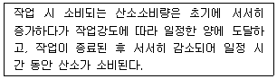
- 산소 부채
- 산소 심취량
- 산소 부족량
- 최대 산소량
(정답률: 80%)
11. 미국산업위생학술원에서 채택한 산업위생전문가의 윤리강령 중 기업주와 고객에 대한 책임과 관계될 윤리강령은?
- 기업체의 기밀은 누설하지 않는다.
- 전문적 판단이 타협에 의하여 좌우될 수 있는 상황에는 개입하지 않는다.
- 근로자, 사회 및 전문 직종의 이익을 위해 과학적 지식을 공개하고 발표한다.
- 결과와 결론을 뒷받침할 수 있도록 기록을 유지하고 산업위생사업을 전문가답게 운영, 관리한다.
(정답률: 53%)
12. 온도 25℃, 1기압 하에서 분당 100mL 씩 60분 동안 채취한 공기 중에서 벤젠이 5mg 검출되었다. 검출된 벤젠은 약 몇 ppm인가? (단, 벤젠의 분자량은 78이다.)
- 15.7
- 26.1
- 157
- 261
(정답률: 50%)
13. 유리제조, 용광로 작업, 세라믹 제조과정에서 발생 가능성이 가장 높은 직업성 질환은?
- 요통
- 근육경련
- 백내장
- 레이노현상
(정답률: 71%)
14. 근전도(electromyogram, EMG)를 이용하여 국소피로를 평가할 때 고려하는 사항으로 틀린 것은?
- 총전압의 감소
- 평균 주파수의 감소
- 저주파수(0~40Hz) 힘의 증가
- 고주파수(40~200Hz) 힘의 감소
(정답률: 79%)
15. 물질안전보건자료(MSDS)의 작성원칙에 관한 설명으로 틀린 것은?
- MSDS는 한글로 작성하는 것을 원칙으로 한다.
- 실험실에서 시험·연구목적으로 사용하는 시약으로서 MSDS가 외국어로 작성된 경우에는 한국어로 번역하지 아니할 수 있다.
- 외국어로 되어 있는 MSDS를 번역 하는 경우에는 자료의 신뢰성이 확보될 수 있도록 최초 작성기관명과 시기를 함께 기재하여야 한다.
- 각 작성항목을 빠짐없이 작성하여야 하지만 부득이 어느 항목에 대해 관련 정보를 얻을 수 없는 경우에는 작성란에 “해당없음”이라 기재한다.
(정답률: 80%)
16. 근로자의 산업안전보건을 위하여 사업주가 취하여야 할 일이 아닌것은?
- 강렬한 소음을 내는 옥내작업장에 대하여 흡음시설을 설치한다.
- 내부환기가 되는 갱에서 내연기관이 부족한 기계를 사용하지 않도록 한다.
- 인체에 해로운 가스의 옥내 작업장에서 공기 중 함유 농도가 보건상 유해한 정도를 초과하지 않도록 조치한다.
- 유해물질 취급작업으로 인하여 근로자에게 유해한 작업인 경우 그 원인을 제거하기 위하여 대체물 사용, 작업방법 및 시설의 변경 또는 개선 조치한다.
(정답률: 75%)
17. 교대제를 기업에서 채택되고 있는 이유와 거리가 먼 것은?
- 섬유공업, 건설사업에서 근로자의 고용기회의 확대를 위하여
- 의료, 방송 등 공공사업에서 국민생활과 이용자의 편의를 위하여
- 화학공업, 석유정제 등 생산과정이 주야로 연속되지 않으면 안 되는 경우
- 기계공업, 방직공업 등 시설투자의 상각을 조속히 달성코자 생산설비를 완전가동 하고 있는 경우
(정답률: 65%)
18. 어떤 물질에 대한 작업환경을 측정한 결과 다음과 같은 TWA 결과값을 얻었다. 환산된 TWA는 약 얼마인가?
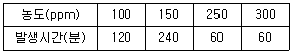
- 169ppm
- 198ppm
- 220ppm
- 256ppm
(정답률: 64%)
19. 산업위생의 정의에 나타난 산업위생의 활동 단계 4가지 중 평가(evaluation)에 포함되지 않는 것은?
- 시료의 채취와 분석
- 예비조사의 목적과 범위 결정
- 노출정도를 노출기준과 통계적인 근거로 비교하여 판정
- 물리적, 화학적, 생물학적, 인간공학적 유해인자 목록 작성
(정답률: 47%)
20. 직업성 피부질환에 대한 설명으로 틀린 것은?
- 대부분은 화학물질에 의한 접촉피부염이다.
- 접촉피부염의 대부분은 알레르기에 의한 것이다.
- 정확한 발생빈도와 원인물질의 추정은 거의 불가능하다.
- 직업성 피부질환의 간접요인으로는 인종, 연령, 계절 등이 있다.
(정답률: 64%)
2과목: 작업위생측정 및 평가
21. 누적소음노출량(D:%)을 적용하여 시간가중평균소음수준(TWA:dB(A))을 산출하는 공식은?
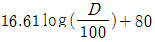
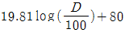
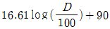
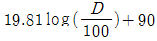
(정답률: 78%)
22. 샐룰로오즈 에스테르 막여과지에 관한 설명으로 틀린 것은?
- 산에 쉽게 용해된다.
- 유해물질이 표면에 주로 침착되어 현미경 분식에 유리하다.
- 흡습성이 적어 중량분석에 주로 적용된다.
- 중금속 시료재취에 유리하다.
(정답률: 64%)
23. 흡착제를 이용하여 시료채취를 할때 영향을 주는 인자에 관한 설명으로 틀린 것은?
- 온도 : 온도가 높을수록 입자의 활성도가 커져 흡착에 좋으며 저온일수록 흡착능이 감소한다.
- 오염물질 농도 : 공기 중 오염물질 농도가 높을수록 파과 용량은 증가하나 파과 공기량은 감소한다.
- 흡착제의 크기: 입자의 크기가 작을수록 표면적이 증가하여 채취효율이 증가하나 압력강하가 심하다.
- 시료채취속도 : 시료채취속도가 높고 코팅된 흡착제 일수록 파과가 일어나기 쉽다.
(정답률: 62%)
24. 자연 습구온도 31.0℃, 흑구온도 24.0℃, 건구온도 34.0℃, 실내작업장에서 시간당 400칼로리가 소모되며 계속작업을 실시하는 주조공장의 WBGT는?
- 28.9℃
- 29.9℃
- 30.9℃
- 31.9℃
(정답률: 70%)
25. 활성탄관(charcoal tubes)을 사용하여 포집하기에 가장 부적합한 오염물질은?
- 할로겐화 탄화수소류
- 에스테르류
- 방향족 탄화수소류
- 니트로 벤젠류
(정답률: 50%)
26. 표준가스에 대한 법칙 중 [일정한 부피조건에서 압력과 온도는 비례한다.]는 내용은?
- 픽스의 법칙
- 보일의 법칙
- 샤를의 법칙
- 게이-루삭의 법칙
(정답률: 66%)
27. 1차, 2차 표준기구에 관한 내용으로 틀린 것은?
- 1차 표준기구란 물리적 차원인 공간의 부피를 직접 측정할 수 있는 기구를 말한다.
- 1차 표준기구로 폐활량제가 사용된다.
- Wet-test미터, Rota미터, Orifice미터는 2차 표준기구이다.
- 2차 표준기구는 1차 표준기구를 보정하는 기구를 말한다.
(정답률: 71%)
28. 입자상 물질을 채취하는 방법 중 직경분립충돌기의 장점으로 틀린것은?
- 호흡기에 무분별로 침착된 입자크기의 자료를 추정할 수 있다.
- 흡입성, 흉곽성, 호흡성 입자의 크기별 분포와 농도를 계산할 수 있다.
- 시료 채취 준비에 시간이 적게 걸리며 비교적 채취가 용이하다.
- 입자의 질량크기분포를 얻을 수 있다.
(정답률: 71%)
29. 유사노출그룹(HEG)에 관한 내용으로 틀린 것은?
- 시료 채취수를 경제적으로 하는데 목적이 있다.
- 유사노출그룹은 우선 유사한 유해인자별로 구분한 후 유해인자의 동질성을 보다 확보하기 위해 조직을 분석한다.
- 역학조사 수행할 때 사건이 발생된 근로자가 속한 유사노출그룹의 노출농도를 근거로 노출원인 및 농도를 추정할 수 있다.
- 유사노출그룹은 노출되는 유해인자의 농도와 특성이 유사하거나 동일한 근로자 그룹을 말하며 유해인자의 특성이 동일하다는 것은 노출되는 유해인자가 동일하고 농도가 일정한 변이 내에서 통계적으로 유사하다는 의미이다.
(정답률: 60%)
30. 입자상 물질의 채취를 위한 섬유상 여과지인 유리섬유여과지에 관한 설명으로 틀린 것은?
- 흡습성이 적고 열에 강하다.
- 결합제 첨가형과 결합제 비첨가형이 있다.
- 와트만(Whatman) 여과지가 대표적이다.
- 유해물질이 여과지의 안층에도 채취된다.
(정답률: 57%)
31. 소음측정방법에 관한 내용으로( )에 알맞은 내용은? (단, 고용노동부 고시 기준)
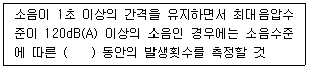
- 1분
- 2분
- 3분
- 5분
(정답률: 73%)
32. 소음의 변동이 심하지 않은 작업장에서 1시간 간격으로 8회 측정한 산술평균의 소음수준이 93.5dB(A)이었을 때 하루 소음노출량(dose,%)은? (단, 근로자의 작업시간은 8시간)
- 104%
- 135%
- 162%
- 234%
(정답률: 36%)
33. 작업장 소음수준을 누적소음노출량측정기로 측정할 경우 기기 설정으로 맞는 것은?
- Threshold = 80dB, Criteria = 90dB, Exchange Rate = 10dB
- Threshold = 90dB, Criteria = 80dB, Exchange Rate = 10dB
- Threshold = 80dB, Criteria = 90dB, Exchange Rate = 5dB
- Threshold = 90dB, Criteria = 80dB, Exchange Rate = 5dB
(정답률: 74%)
34. 다음의 유기용제 중 실리카겔에 대한 친화력이 가장 강한 것은?
- 알콜류
- 알데하이드류
- 케론류
- 에스테르류
(정답률: 63%)
35. 미국 ACGIH에서 정의한 (A) 흉곽성 먼지(Thoracic particulate mass, TPM)와 (B) 호흡성 먼지(Respirable particulate mass, RPM)의 평균입자크기로 옳은 것은?
- (A) 5 μm, (B) 15 μm
- (A) 15 μm, (B) 5 μm
- (A) 4 μm, (B) 10 μm
- (A) 10 μm, (B) 4 μm
(정답률: 76%)
36. 흡광광도계에서 빛의 강도가 io인 단색광이 어떤 시료용액을 통과할 때 그 빛이 30%가 흡수될 경우, 흡광도는?
- 약 0.30
- 약 0.24
- 약 0.16
- 약 0.12
(정답률: 56%)
37. 시간당 200~350 kcal의 열량이 소모되는 중동작업 조건에서 WBGT측정치가 31.2℃일 때 고열작업 노출기준의 작업휴식조건은?
- 매시간 50% 작업, 50% 휴식 조건
- 매시간 75% 작업, 25% 휴식 조건
- 매시간 25% 작업, 75% 휴식 조건
- 계속 작업 조건
(정답률: 61%)
38. 40% 벤젠, 30% 아세톤 그리고 30% 툴루엔의 중량비로 조성된 용제가 증발되어 작업환경을 오염시키고 있다. 이 때 가각의 TLV가 각각 30mg/m3, 1780mg/m3 및 375mg/m3 이라면 이 작업장의 혼합물의 허용농도(mg/m3)는? (단, 상가작용 기준)
- 47.9
- 59.9
- 69.9
- 76.9
(정답률: 70%)
39. 시간가중평균기준(TWA)이 설정되어 있는 대상물질을 측정하는 경우에는 1일 작업시간 동안 6시간 이상 연속 측정하거나 작업시간을 등간격으로 나누어 6시간 이상 연속분리하여 측정하여 한다. 다음중 대상물질의 발생시간동안 측정할 수 있는 경우가 아닌 것은? (단, 고용노동부 고시 기준)
- 대상물질의 발생시간이 6시간 이하인 경우
- 불규칙작업으로 6시간 이하의 작업
- 발생원에서의 발생시간이 간헐적인 경우
- 공정 및 취급인자 변동이 없는 경우
(정답률: 47%)
40. 음압이 10배 증가하면 음압 수준은 몇 dB이 증가하는가?
- 10dB
- 20dB
- 30dB
- 40dB
(정답률: 55%)
3과목: 작업환경관리대책
41. 작업장에서 메틸에틸케론(MEK : 허용기준 200ppm)이 3L/hr로 증발하여 작업장을 오염시키고 있다. 전체 (회식)환기를 위한 필요 환기량은? (단, K -6, 분자량 -72 메틸에틸케론 비중 = 0.8⑤ 21℃, 1기압 상태 기준)
- 약 160 m3/min
- 약 280 m3/min
- 약 330 m3/min
- 약 410 m3/min
(정답률: 42%)
42. 측류송풍기에 관한 설명으로 가장 거리가 먼 것은?
- 전등기와 직결할 수 있고, 또 축방향 흐름이기 때문에 관로 도중에 설치할 수 있다.
- 가볍고 재료비 및 설치비용이 저렴하다.
- 원통형으로 되어 있다.
- 급정 풍량 범위가 넓어 가열공기 또는 오염공기의 취급에 유리하다.
(정답률: 34%)
43. 작업환경개선 대책 중 격리와 가장 거리가 먼 것은?
- 콘크리트 방호벽의 설치
- 원격조정
- 자동화
- 국소배기 장치의 설치
(정답률: 72%)
44. 보호구의 보호 정도를 나타내는 할당보호계수(APF)에 관한 설명으로 가장 거리가 먼 것은?
- 보호구 밖의 유량과 안의 유량 비(Qo/Qi)로 표현된다.
- APF를 이용하여 보호구에 대한 최대사용 농도를 구할 수 있다.
- APF가 100인 보호구를 착용하고 작업장에 들어가면 착용자는 외부유해물질로부터 적어도 100배만큼의 보호를 받을 수 있다는 의미이다.
- 일반적인 PF 개념의 특별한 적용으로 적절히 밀착이 이루어진 호흡기보호구를 훈련된 일련의 착용자들이 작업장에서 착용하였을 때 기대되는 최소 보호정도치를 말한다.
(정답률: 53%)
45. 방진마스크에 대한 설명으로 옳은 것은?
- 무게 중심은 안면에 강한 압박감을 주는 위치여야 한다.
- 흡기 저항 상승률이 높은 것이 좋다.
- 필터의 여과효율이 높고 흡입저항이 클수록 좋다.
- 비휘발성 입자에 대한 보호만 가능하고 가스 및 증기의 보호는 안된다.
(정답률: 62%)
46. 국소환기시설 설계에 있어 정압조절평형법의 장점으로 틀린 것은?
- 예기치 않은 침식 및 부식이나 퇴적문제가 일어나지 않는다.
- 설계 설치된 시설의 개조가 용이하여 장치변경이나 확장에 대한 유연성이 크다.
- 설계가 정확할 때에는 가장 효율적인 시설이 된다.
- 설계시 잘못 설계된 분지관 또는 저항이 제일 큰 분지관을 쉽게 발견 할 수 있다.
(정답률: 53%)
47. 작업환경개선을 위해 전체 환기를 적용할 수 있는 일반적인 상황으로 틀린 것은?
- 오염발생원의 유해물질 발생량이 적은 경우
- 작업자가 근무하는 장소로부터 오염발생원이 멀리 떨어져 있는 경우
- 소량의 오염물질이 일정속도로 작업장으로 배출되는 경우
- 동일작업장에 오염발생원이 한군데로 집중되어 있는 경우
(정답률: 74%)
48. 직경이 10cm인 원형 후두가 있다. 관내를 흐르는 유량이 0.2m3/s라면 후드 입구에서 20cm 떨어진 곳에서의 제어속도(m/s)는?
- 0.29
- 0.39
- 0.49
- 0.59
(정답률: 36%)
49. 사무실 직원이 모두 퇴근한 6시30분에 CO2농도는 1700ppm이였다. 4시간이 지난 후 다시 CO2농도를 측정한 결과 CO2농도는 800ppm이었다면, 사무실의 시간당 공기 교환 횟수는? (단, 외부공기 중 CO2농도는 330ppm)
- 0.11
- 0.19
- 0.27
- 0.35
(정답률: 50%)
50. A 물질의 증기압이 50 mmHg이라면 이때 포화 증기농도(%)는? (단, 표준상태 기준)
- 6.6
- 8.8
- 10.0
- 12.2
(정답률: 66%)
51. 다음 보기에서 공기공급시스템(보충용 공기의 공급 장치)이 필요한 이유로 옳게 짝지은 것은?
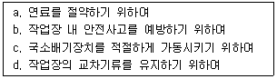
- a, b
- a, b, c
- b, c, d
- a, b, c, d
(정답률: 65%)
52. 1 기압, 온도 15℃ 조건에서 속도압이 37.2mmH2O일 때 기류의 유속(m/sec)은? (단, 15℃, 1기압에서 공기의 밀도는 1.225kg/m3이다.)
- 24.4
- 26.1
- 28.3
- 29.6
(정답률: 53%)
53. 사무실에서 일하는 근로자의 건강장해를 예방하기 위해 시간당 공기교환횟수는 6회 이상 되어야한다. 사무실의 체적이 150m3일 때 최소 필요한 환기량(m3/min)은?
- 9
- 12
- 15
- 18
(정답률: 52%)
54. 관(管)의 안지름이 200mm인 직관을 통하여 가스유량이 55m3분의 표준공기를 송풍할 때 관내 평균유속(m/sec)은?
- 약 21.8
- 약 24.5
- 약 29.2
- 약 32.3
(정답률: 54%)
55. 송풍량이 400m3/min이고 송풍기전압이 100 mmH2O인 송풍기를 가동할 때 소요동력(kW)은? (단, 송풍기의 효율은 60% 이다.)
- 약 6.9
- 약 8.4
- 약 10.9
- 약 12.2
(정답률: 63%)
56. 관내유속이 1.25m/sec, 관직경 0.⑤m 일 때 Reynodds 수는? (단, 20℃, 1기압, 동점성계수 =1.5×10-5m2/sec)
- 3257
- 4167
- 5387
- 6237
(정답률: 64%)
57. 정압회목계수가 0.72이고 정압회복량이 7.2mmH2O인 원형 확대관의 압력손실(mmH2O)은?
- 4.2
- 3.6
- 2.8
- 1.3
(정답률: 31%)
58. 회전차 외경이 600mm인 레이디얼(방사날개형) 송풍기의 풍량은 300m3/min, 송풍기 전압은 60mmH2O, 축동력이 0.70kW이다. 회전차 외경이 1000mm로 상사인 레이디얼(방사날개형) 송풍기가 같은 회전수로 운전될 때 전압(mmH2O)은? (단, 공기 비중은 같음)
- 167
- 182
- 214
- 246
(정답률: 38%)
59. 공기정화장치의 한 종류인 원심력 집진기에서 절단입경(cut-size, Dc)은 무엇을 의미하는가?
- 100% 분리 포집되는 입자의 최소 입경
- 100% 처리효율로 제거되는 입자크기
- 90% 이상 처리효율로 제거되는 입자크기
- 50% 처리효율로 제거되는 입자크기
(정답률: 54%)
60. 어떤 작업장의 음압 수준이 86dB(A)이고, 근로자는 귀덮개를 착용하고 있다. 귀덮개의 차음평가수는 NRR = 19이다. 근로자가 노출되는 음압(예측)수준(dB(A))은? (단, OSHA 기준)
- 74
- 76
- 78
- 80
(정답률: 63%)
4과목: 물리적유해인자관리
61. 저압 환경상태에서 발생되는 질환이 아닌 것은?
- 폐수종
- 급성 고산병
- 저산소증
- 질소가스 마취장해
(정답률: 53%)
62. 청력 손실차가 다음과 같을 때, 6분법에 의하여 판정하면 청력손실은 얼마인가?
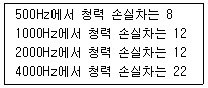
- 12
- 13
- 14
- 15
(정답률: 63%)
63. 빛에 관한 설명으로 틀린 것은?
- 광원으로부터 나오는 빛의 세기를 조도라 한다.
- 단위 평면적에서 발산 또는 반사되는 장량을 휘도라 한다.
- 루멘은 1측광의 광원으로부터 단위입체각으로 나가는 광속의 단위이다.
- 조도는 어떤 면에 들어오는 광속의 양에 비례하고, 입사면의 단면적에 반비례한다.
(정답률: 55%)
64. 불활성가스 용접에서는 자외선량이 많아 오존이 발생한다. 염화계탄화 수소에 자외선이 조사되어 분해될 경우 발생하는 유해물질로 맞은 것은?
- COCl2(포스겐)
- HCl(염화수소)
- NO3(삼산화질소)
- HCHO(포름알데히드)
(정답률: 63%)
65. 레이저광선에 가장 민감한 인체기관은?
- 눈
- 소뇌
- 갑상선
- 척수
(정답률: 80%)
66. 대상음의 음압이 1.0N/m2일 때 음압레벨(Sound Presssure Level)은 몇 dB 인가?
- 91
- 94
- 97
- 100
(정답률: 59%)
67. 화학적 질식제로 산소결핍장소에서 보건학적 의의가 가장 큰 것은?
- CO
- CO2
- SO2
- NO2
(정답률: 66%)
68. 조명에 대한 설명으로 틀린 것은?
- 생내부에서의 안구진탕중은 조명부족으로 발생할 수 있다.
- 망막변성 등 기질적 안질환은 조명부족에 의한 영향이 큰 안질환이다.
- 조명부족하에서 작은 대상물을 장시간 직시하면 근시를 유발할 수 있다.
- 조명과잉은 망막을 자극해서 잔상을 동반한 시력장해 또는 시력협착을 일으킨다.
(정답률: 54%)
69. 고압 환경의 영향에 있어 2차적인 가압현상에 해당하지 않는 것은?
- 질소마취
- 산소중독
- 조직의 통증
- 이산화탄소 중독
(정답률: 60%)
70. 가청 주파수 최대 범위로 맞는 것은?
- 10 ~ 80,000 Hz
- 20 ~ 2,000 Hz
- 20 ~ 20,000 Hz
- 100 ~ 8,000 Hz
(정답률: 56%)
71. 진동이 발생되는 작업장에서 근로자에게 노출되는 양을 줄이기 위한 관리대책 중 적절하지 못한 것은?
- 진동전과 경로를 차단한다.
- 완충물등 방진재료를 사용한다.
- 공진을 확대시켜 진동을 최소화 한다.
- 작업시간의 단축 및 교대제를 실시한다.
(정답률: 66%)
72. 한랭작업과 관련된 설명으로 틀린것은?
- 저체온증은 몸의 심부온도가 35℃이하로 내려간 것을 말한다.
- 저온작업에서 손가락, 발가락 등의 말초부위는 피부온도 저하가 가장 심한 부위이다.
- 흑심한 한냉에 노출됨으로써 피부 및 피하조직 자체가 동결하여 조직이 손상되는 것을 말한다.
- 근로자의 발이 한랭에 장기간 노출되고 동시에 지속적으로 습기나 물에 잠기게 되면 '선단자람증'의 원인이 된다.
(정답률: 72%)
73. 산업장 소음에 대한 차음효과는 벽체의 단위 표면적에 대하여 벽체의 무게를 2 배로 할 때 마다 몇 dB씩 증가하는가?
- 2dB
- 3dB
- 5dB
- 6dB
(정답률: 66%)
74. 단위시간에 일어나는 방사선 붕괴율을 나타내며, 초당 3.7×1010개의 원자붕괴가 일어나는 방사능물질의 양으로 정의되는 것은?
- R
- Ci
- Gy
- Sv
(정답률: 59%)
75. 다음의 ( )에 들어갈 가장 적당한 값은?
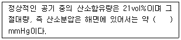
- 160
- 210
- 230
- 380
(정답률: 71%)
76. 인체와 환경 사이의 열평형에 의하여 인체는 적절한 체온을 유지하려고 노력하는데 기본적인 열평형 방정식에 있어 신체 열용량의 변화가 0보다 크면 생산된 열이 축적되게되고 체온조절중추인 시상하부에서 혈액온도를 감지하거나 신경망을 통하여 정보를 받아 들여 체온 방산작용이 활발히 시작된다. 이러한 것은 무엇이라 하는가?
- 정신적 조절작용(spiritual thermo regulation)
- 물리적 조절작용(physical thermo regulation)
- 화학적 조절작용(chemical thermo regulation)
- 생물학적 조절작용(biological thermo regulation)
(정답률: 62%)
77. 열경련(Heat Cramp)을 일으키는 가장 큰 원인은?
- 체온상승
- 중추신경마비
- 순환기계 부조화
- 체내수분 및 염분손실
(정답률: 72%)
78. 소음의 생리적 영향으로 볼 수 없는 것은?
- 혈압 감소
- 맥박수 증가
- 위분비액 감소
- 집중력 감소
(정답률: 67%)
79. X-선과 동일한 특성을 가지는 전자파 전리방사선으로 원자의 액에서 발생되고 깊은 투과성 때문에 외부노출에 의한 문제점이 지적되고 있는 것은?
- 중성자
- 알파(α)선
- 베타(β)선
- 감마(γ)선
(정답률: 67%)
80. 일반적으로 전신진동에 의한 생체반응에 관여하는 인자로 거리가 먼 것은?
- 강도
- 방향
- 온도
- 진동수
(정답률: 70%)
5과목: 산업독성학
81. 다음 설명에 해당하는 중금속의 종류는?
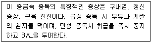
- 납
- 크롬
- 수은
- 카드뮴
(정답률: 73%)
82. 유기용제의 화학적 성상에 따른 유기용제의 구분으로 볼 수 없는 것은?
- 신나류
- 글리클류
- 케톤류
- 지방족 탄화수소
(정답률: 54%)
83. 건강영향에 따른 분진의 분류와 유발물질의 종류를 잘못 짝지은 것은?
- 유기성 분진 - 목분진, 면, 밀가루
- 알레르기성 분진 - 크롬산, 망간, 황
- 진폐성 분진 - 규산, 석면, 활석, 흑연
- 발암성 분진 - 석면, 니켈카보닐, 아민계 색소
(정답률: 72%)
84. 헤모글로빈의 철성분이 어떤 화학물질에 의하여 메트헤로글로빈으로 전환되기도 하는데 이러한 현상은 철성분이 어떠한 화학작용을 받기 때문인가?
- 산화작용
- 환원작용
- 착화물작용
- 가수분해작용
(정답률: 54%)
85. 작업장 유해인자의 위해도 평가를 위해 고려하여야 할 요인과 거리가 먼 것은?
- 공간적 분포
- 조직적 특성
- 평가의 합리성
- 시간적 빈도와 기간
(정답률: 53%)
86. 혈액독성의 평가내용으로 거리가 먼 것은?
- 백혈구수가 정상치보다 낮으면 재생 불량성 빈혈이 의심된다.
- 혈색소 정상치보다 높으면 간장질환, 관절염이 의심된다.
- 혈구용적이 정상치보다 높으면 탈수증과 다혈구증이 의심된다.
- 혈소판수가 정상치보다 낮으면 골수기능저하가 의심된다.
(정답률: 53%)
87. 유해물질의 흡수에서 배설까지에 관한 설명으로 틀린 것은?
- 흡수된 유해물질은 원래의 형태든, 대사산물의 형태로든 배설되기 위하여 수용성으로 대사된다.
- 흡수된 유해화학물질은 다양한 비특이적 효소에 의하여 이루어지는 유해물질의 대사로 수용성이 증가되어 체외로 배출이 용이하게 된다.
- 간은 화학물질을 대사시키고 콩팥과 함께 배설시키는 기능을 가지고 있는 것과 관련하여 다른 장기보다도 여러 유해물질의 농도가 낮다.
- 유해물질은 조직에 분포되기 전에 먼저 몇 개의 막을 통과하여야 하며, 흡수속도는 유해물질의 물리화학적 성상과 막의 특성에 따라 결정된다.
(정답률: 71%)
88. 유해화학물질의 노출 정보에 관한 설명으로 틀린 것은?
- 위의 산도에 따라서 유해물질이 화학반응을 일으키기도 한다.
- 입으로 들어간 유해물질은 침이나 그 밖의 소화액에 의해 위장관에서 흡수된다.
- 소화기계통으로 노출되는 경우가 호흡기로 노출되는 경우보다 흡수가 잘 이루어진다.
- 소화기계통으로 침입하는 것은 위장관에서 산화, 환원, 분해과정을 거치면서 해독되기도 한다.
(정답률: 61%)
89. 유기용제에 대한 생물학적지표로 이용되는 요중 다사산물을 알맞게 짝지은 것은?
- 톨루엔 - 페놀
- 크실렌 - 페놀
- 노말헥산 - 만델린산
- 에틸멘젠 - 만델린산
(정답률: 46%)
90. 납에 관한 설명으로 틀린 것은?
- 폐암을 야기하는 발암물질로 확인 되었다.
- 축전지제조업, 광명단제조업 근로자가 노출될 수 있다.
- 최근의 납의 노출정도는 혈액 중 납 농도로 확인할 수 있다.
- 납중독을 확인하는 데는 혈액 중 ZPP 농도를 이용할 수 있다.
(정답률: 57%)
91. 인체에 미치는 영향에 있어서 석면(asbestos)은 유리규산(free silica)과 거의 비슷하지만 구별되는 특징이 있다. 석면에 의한 특징적 질병 혹은 증상은?
- 폐기종
- 악성중피종
- 호흡곤란
- 가슴의 통증
(정답률: 74%)
92. 화기 등에 접촉하면 유독성의 포스겐이 발생하여 폐수종을 일으킬 수 있는 유기용제는?
- 벤젠
- 크실렌
- 노말헥산
- 염화에틸렌
(정답률: 52%)
93. 다음 내용과 가장 관계가 값은 물질은?
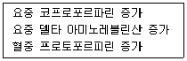
- 납
- 비소
- 수은
- 카드뮴
(정답률: 54%)
94. 중금속 노출에 의하여 나타나는 금속열은 흄형태의 금속을 흡입하여 발생되는데, 감기증상과 매우 비슷하여 오한, 구토감, 기침, 전신위약감 등의 증상이 있으며, 월요일 출근 후에 심해져서 월요일열이라고도 한다. 다음 중 금속열을 일으키는 물질이 아닌 것은?
- 납
- 카드뮴
- 산화아연
- 안티몬
(정답률: 46%)
95. 폐결핵을 합병증으로 하여 폐하엽 부위에 많이 생기는 증상으로 맞는 것은?
- 면폐증
- 철폐증
- 규폐증
- 석면폐증
(정답률: 58%)
96. 무색의 휘발성 용액으로서 도금 사업장에서 금속표면의 탈지 및 세정용으로 사용되며, 간 및 신장 장해를 유발시키는 유기용제는?
- 톨루엔
- 노르말헥산
- 트리클로로에틸렌
- 클로르포름
(정답률: 44%)
97. 화학물질에 의한 암발생 이론 중 다단계 이론에서 언급되는 단계와 거리가 먼 것은?
- 개시 단계
- 진행 단계
- 촉진 단계
- 병리 단계
(정답률: 53%)
98. 생물학적 모니터링을 위한 시료채취시간에 제한이 없는 것은?
- 소변 중 아세톤
- 소변 중 카드뮴
- 호기 중 일산화탄소
- 소변 중 총 크롬(6가)
(정답률: 56%)
99. 납의 독성에 대한 인체실험 결과, 안전흡수량이 체중 kg 당 0.0⑤mg이었다. 1일 8시간 작업시의 허용농도(mg/m3)는? (단, 근로자의 평균 체중은 70kg, 해당 작업시의 폐환기율은 시간당 1.25m3으로 가정한다.)
- 0.030
- 0.035
- 0.040
- 0.045
(정답률: 64%)
100. 다음 설명의 ( )에 알맞은 내용으로 나열된 것은?
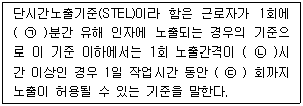
- ㉠ : 15, ㉡ : 1, ㉢ : 2
- ㉠ : 15, ㉡ : 1, ㉢ : 4
- ㉠ : 20, ㉡ : 2, ㉢ : 5
- ㉠ : 20, ㉡ : 3, ㉢ : 3
(정답률: 74%)